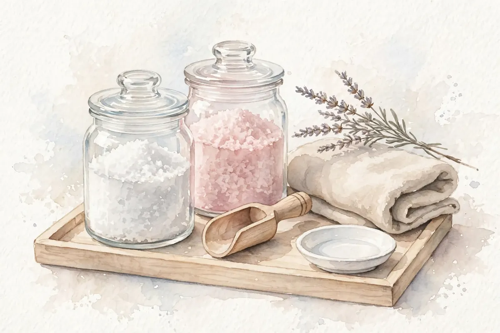

トップ ＞ ボディケア ＞ 入浴剤のタイプ別表示：粉末・液体・発泡の読み方
入浴剤のタイプ別表示：粉末・液体・発泡の読み方

入浴剤は、粉末、液体、発泡（錠剤）など、いくつかのタイプがあります。お風呂に入れるものとして同じように見えますが、表示の読み方や、1回分の目安の考え方はタイプごとに違います。この記事では、特定の商品をおすすめするのではなく、入浴剤のタイプ別表示の読み方を整理します。
タイプ別の表示の違い
粉末タイプは、お湯に溶かして使うもので、1回分の目安が「キャップ1杯」「付属のスプーン1杯」といった形で書かれていることが多いです。液体タイプは、ボトルから注いで使うもので、「キャップ1杯分」や「目盛りまで」といった表示があります。発泡タイプは、錠剤を1錠お湯に入れるもので、「1回1錠」といった表示が中心です。
つまり、粉末と液体は「量をはかる」タイプ、発泡は「数を数える」タイプ、と分けて考えると整理しやすくなります。どのタイプでも、1回分の目安はパッケージの裏面や側面に書かれています。初めて使うときは、まずこの目安の表示を探すのが、私の習慣です。
1回分の目安の読み方
1回分の目安は、お湯の量とセットで書かれていることが多いです。「お湯200Lに対してキャップ1杯」といった具合で、お風呂のお湯の量が前提になっています。家庭のお風呂のお湯の量は、浴槽の大きさによって違います。目安の表示が「200L」を前提にしている場合、お湯の量が少なければ、入れる量も少なくていい、という考え方になります。
発泡タイプは、1錠が1回分として設計されていることが多く、量をはかる手間がありません。ただし、浴槽のお湯の量が多い場合は、表示の案内を確認しておくといいでしょう。粉末や液体の場合は、計量のキャップやスプーンが付属しているかどうかも、パッケージの表示で確認できます。付属していない場合は、家にある計量スプーンを使う、という方法もあります。
使用上の注意の欄を読む
入浴剤のパッケージには、使用上の注意が書かれています。「追いだきができるかどうか」「残り湯を洗濯に使えるかどうか」といった案内は、家庭のお風呂の使い方と直接関わる部分です。追いだきができるタイプと、できないタイプがあるので、買う前に確認しておくといいでしょう。
また、浴槽の素材によって、使えるタイプが限られることもあります。木の浴槽や、特殊な素材の浴槽では、表示に注意書きがある場合があります。入浴剤の色が浴槽に残ることがある、といった案内が書かれていることもあります。こうした注意書きは、その商品を使ううえでの大切な情報なので、買う前に目を通しておく価値があります。
保管と使い切りの目安
入浴剤は、お風呂場に置きっぱなしにしがちなものですが、保管の表示も確認しておきたいところです。「高温多湿を避ける」「開封後は早めに使う」といった表示が、パッケージに書かれています。粉末タイプは湿気を吸いやすく、液体タイプはキャップのまわりが汚れやすい、といったタイプごとの特徴もあります。
使い切りの目安としては、開封後の表示を確認するのが基本です。1回分の目安と、入っている回数分から、なくなるまでの期間が見えてきます。個包装のものは、1回分ずつ分かれているので、使う分だけ取り出す、という使い方ができます。箱入りのものは、開封日をメモしておくと、使い切りの目安を立てやすくなります。
香りや色の表示も、入浴剤の選び方の手がかりです。「香りの種類」や「湯の色」が、パッケージの表面に書かれていることが多いです。香りの強さや、湯の色のつき方は、お湯の量や入れる量によっても変わります。初めて使うものは、まず表示の目安量で試して、その日のお風呂の様子を見て、次回の量を決める、という使い方が、調整をしやすい方法です。
セラフィナ「粉末と液体は量をはかるタイプ、発泡は数を数えるタイプ。まず目安の表示を探すのが先だね」

セラフィナ｜美容の道具箱の案内役
「量と表示が分かれば、美容は失敗しない。」——セラフィナと白猫のモコが、買う前のチェックポイントを案内します。綺麗になりたい気持ちに正直に、でも表示は冷静に読むのが、このサイトの約束です。